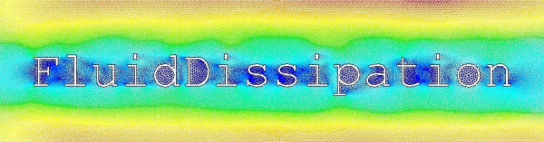

This library contains convective heat transfer and pressure loss functions written in Modelica®. Generally the pressure loss calculations are based on incompressible fluids and total pressure difference. For devices with non changing cross sectional area, the calculated total pressure loss is equal to the static pressure difference. Geodetic pressure loss is not considered throughout the library. The functions supplied may be used separately.
The library is a non-commercial product of XRG Simulation GmbH.
The following people contributed to the Fluid.Dissipation library (alphabetical list): Jörg Eiden, Ole Engel, Nina Peci, Sven Rutkowski, Thorben Vahlenkamp, Stefan Wischhusen.
The development of the Fluid.Dissipation library was founded within the ITEA research project EuroSysLib-D by German Federal Ministry of Education and Research (promotional reference 01IS07022B). The project was started in October 2007 and ended in June 2010.
Licensed by the Modelica Association under the 3-Clause BSD License
Copyright © 2007-2018, XRG Simulation GmbH.
This Modelica package is free software and the use is completely at your own risk; it can be redistributed and/or modified under the terms of the 3-Clause BSD license. For license conditions (including the disclaimer of warranty) visit https://modelica.org/licenses/modelica-3-clause-bsd.
Extends from Modelica.Icons.BasesPackage (Icon for packages containing base classes).
| Name | Description |
|---|---|
HeatTransfer … | Package for calculation of heat transfer |
PressureLoss … | Package for calculation of pressure loss |
UsersGuide … | User's guide |
Utilities … | Package for utilities (should not be used directly) |
Generated 2018-10-22 14:48:31 EDT by MapleSim.